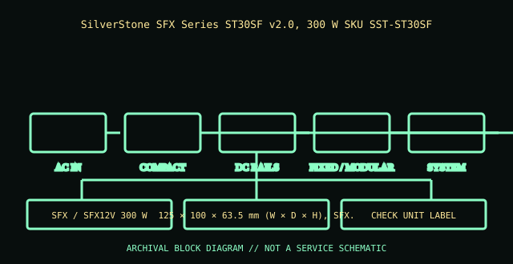

[ POWER CONVERSION // IDENTIFIED MODEL ]
SilverStone ST30SF v2.0 (SST-ST30SF-V2)
SilverStone SFX Series ST30SF v2.0, 300 W SKU SST-ST30SF-V2. This record is bounded to the named unit, standard revision, or model family below; nearby model names and replacement parts are not presumed equivalent.

HIGH-VOLTAGE SAFETY: Unplug before external inspection. Never open a power supply. Dangerous voltage can remain inside after it is disconnected. Do not attempt internal repair; use qualified service or replace the unit.
Verified identity & specifications
| Catalog identity | SilverStone SFX Series ST30SF v2.0, 300 W SKU SST-ST30SF-V2 |
|---|---|
| Form factor / era | SFX / SFX12V 300 W |
| AC input | 90–264 V AC, 47–63 Hz (check nameplate). |
| DC output rating | 300 W continuous; +12 V 25 A maximum; remaining combined rail limits are version/manual-specific. |
| Mechanical envelope | 125 × 100 × 63.5 mm (W × D × H), SFX. |
| Connectors / interface | Fixed 24-pin ATX/EPS/PCIe/SATA/peripheral harness; verify exact harness population with the V2 manual. |
| Revision differences | V2.0 revision differs from original ST30SF in efficiency/cabling; model suffix matters. SFX-L is longer and not the same chassis envelope. |
Compatibility & safe handling
- Match full model, suffix, region, revision and DC output label to the official documentation. Rated total watts alone do not establish rail or transient compatibility.
- Before replacement, confirm AC input range, rail current/combined limits, motherboard signaling and pinout, mechanical envelope, fasteners, cooling direction, and every required connector.
- Never open the PSU, defeat protective earth, or probe its internals. Do not energize a wet, cracked, corroded, burned, modified, or unidentified supply.
- Modular cable pinouts are not standardized at the PSU end. Use only cables expressly approved for this exact model/revision; matching plugs can have different wiring.
Model and revision notes
V2.0 revision differs from original ST30SF in efficiency/cabling; model suffix matters. SFX-L is longer and not the same chassis envelope.
SilverStone SST-ST30SF-V2 official specification/manual page; use its dimensions, label ratings, and included-cable list.
Archival notes
Record V2 designation and full nameplate. SFX screws/adapters do not establish electrical compatibility or safe case airflow.
Photograph the complete nameplate, assembly/model code, revision/date code, input selector if present, cable ends and mounting side. Separate observed label data from published specifications and preserve the referenced manual issue.
Manufacturer / standards references
- SilverStone SST-ST30SF-V2 official specification/manual pageSilverStone SST-ST30SF-V2 official specification/manual page; use its dimensions, label ratings, and included-cable list.
- Intel — ATX / ATX12V Power Supply Design GuideStandards reference for the ATX electrical/mechanical family; use the revision specified for the product. Historical IBM supplies are not ATX and must not be adapted on this basis.
The exact nameplate and corresponding manufacturer manual remain controlling for regional and hardware revisions.